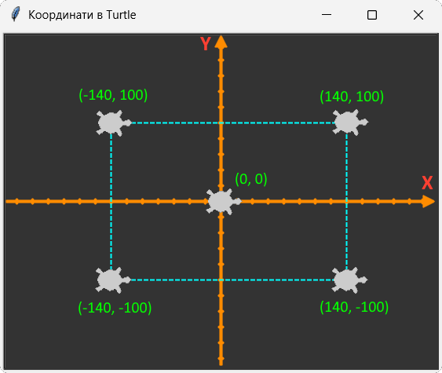
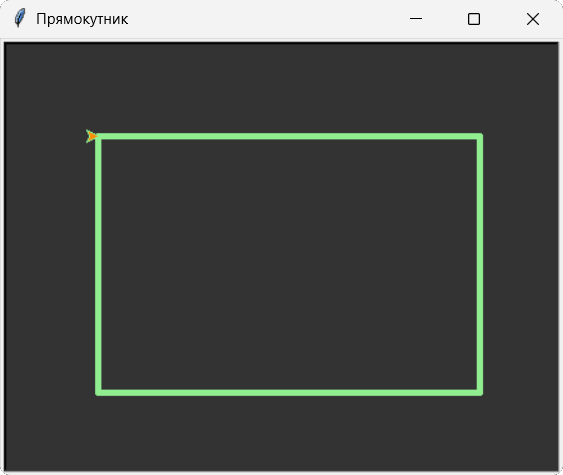
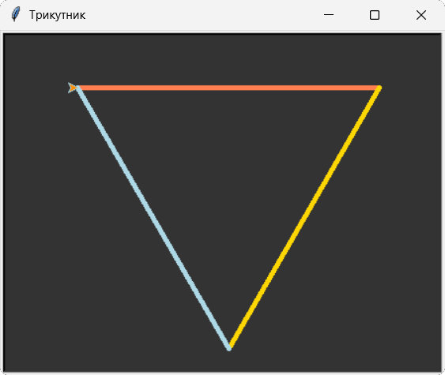
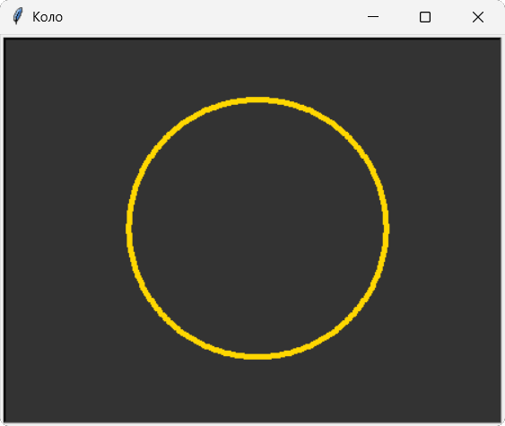

В цьому розділі ти дізнаєшся як рухається черепашка по координатній площині. Не знаєш що таке
координатна площина? Тоді переглянь відеоматеріал з математики за 6 клас, де все чудово пояснено: "Координатна площина та координати точки". Положення
кожної черепашки на екрані описується двома координатами (x та y):
x - кордината на осі абсцис (положення черепашки на горизонталі)
y - кордина на осі ординат (положення черепашки по вертикалі)
Координатна площина на екрані

Основні методи положення черепашки:
| Метод | Опис |
|---|---|
| goto(X, Y) | Переміcтить черепашку в позицію з координатами (X, Y). Наприклад: name.turtle(140, 100). Зверіть увагу, якщо перо опушене, буде намальована лінія. |
| teleport(X, Y) | Перемістить черепашку в позицію з координатами (X, Y). На відміну від goto(X, Y) - лінія не буде намальована. |
| setx(X) | Встановлює першу координату черепахи на X , другу координату залишає незмінною. |
| sety(Y) | Встановлює другу координату черепахи на Y , першу координату залишає незмінною. |
| home() | Перемістить черепаху в початкове положення (в точку з координатими (0, 0)) |
| setheading(кут) або seth(кут) | Встановлює орієнтацію черепахи на кут від 0 до 360. Наприклад: name.seth(0) - орієнтація на схід, (90 - північ, 180 - захід, 270 - південь). |
| position() або pos() | Отримує поточні координати точки в якій знаходиться черепашка. |
Основні команди черепашки:
| Команда | Опис |
|---|---|
| forward() або fd() | Рухає черепашку вперед на вказану кількість пікселів. Наприклад: turtle.forward(100) або turtle.fd(100) |
| backward() або bk() | Рухає черепашку назад на вказану кількість пікселів. Наприклад: turtle.backward(50) або turtle.bk(50) |
| right() або rt() | Повертає черепашку праворуч на вказану кількість градусів. Наприклад: turtle.right(90) або turtle.rt(90) |
| left() або lt() | Повертає черепашку ліворуч на вказану кількість градусів. Наприклад: turtle.left(45) або turtle.lt(45) |
| penup() або pu() | Піднімає перо, черепашка перестає малювати при русі. Наприклад: turtle.penup() або turtle.pu() |
| pendown() або pd() | Опускає перо, черепашка починає малювати при русі. Наприклад: turtle.pendown() або turtle.pd() |
1. Намалюємо прямокутник салатового кольору з довжиною сторін 305х205 пікселів та товщиною лінії 5 пікселів.
import turtle
screen = turtle.Screen()
screen.title("Прямокутник")
screen.bgcolor("#333333")
screen.setup(width=450, height=350)
ben=turtle.Turtle()
ben.penup()
ben.goto(-150, 100)
ben.fillcolor("#ff8c00")
ben.pencolor("lightgreen")
ben.pensize(5)
ben.pendown()
for i in range(2):
ben.fd(305)
ben.rt(90)
ben.fd(205)
ben.rt(90)
turtle.done()

2. Намалюємо рівносторонній трикутник кожна сторона якого буде різного кольору.
import turtle
screen = turtle.Screen()
screen.title("Трикутник")
screen.bgcolor("#333333")
screen.setup(width=450, height=350)
ben=turtle.Turtle()
ben.penup()
colors=["coral","gold","lightblue"]
ben.goto(-150, 120)
ben.fillcolor("#ff8c00")
ben.pensize(5)
ben.pendown()
for i in range(3):
ben.pencolor(colors[i])
ben.fd(305)
ben.rt(120)
turtle.done()

3. Намалюємо коло.
import turtle
screen = turtle.Screen()
screen.title("Коло")
screen.bgcolor("#333333")
screen.setup(width=450, height=350)
ben=turtle.Turtle()
ben.penup()
ben.goto(0, 120)
ben.fillcolor("#ff8c00")
ben.pencolor("gold")
ben.hideturtle()
ben.pensize(5)
ben.pendown()
for i in range(360):
ben.fd(2)
ben.rt(1)
turtle.done()

Підказка: Щоб розрахувати кут повороту черепашки при малюванні багатокутників, потрібно число 360° розділити на кількість кутів багатокутника. Наприклад, при малюванні п'ятикутника потрібно 360° розділити на 5, отримаємо 72°. Виключенням є трикутник - тому що сума його кутів становить 180°, а не 360°
1. Створіть черепашку та перемістіть її без малювання у точку з координатами (-150, -50).
2. Намалюйте квадрат за допомогою координат з товщиною лінії 7 пікселів.
3. Намалюйте коло оранжевого кольору з товщиною лінії 3 пікселі.
4. Поверніть черепашку у центр екрана.
5. Змініть форму черепашки на "square".
6. Проаналізуйте отриманий результат і внесіть зміни до коду програми щоб зображення мало естетичний вигляд.
Початковий рівень
1. Створіть вікно з рожевим фоном.
2. Намалюйте лінію довжиною 250 пікселів.
Середній рівень
1. Створіть черепашку у формі кола.
2. Намалюйте намалюйте рівносторонній шестикутник.
Достатній рівень
1. Намалюйте будинок із двох геометричних фігур - трикутника та прямокутника.
2. Використайте різні кольори для кожної фігури.
Високий рівень
1. Дізнайтесь в інтернет, що являє собою зірка Давида (Маген Давид).
2. Намалюйте її за допомогою виконавця "Черепашка" з товщиною ліній 10 пікселів і відповідного кольору.